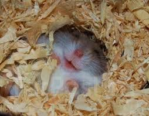
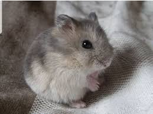
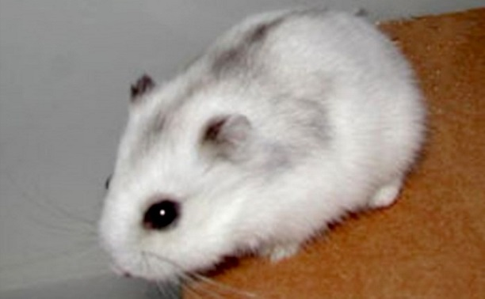
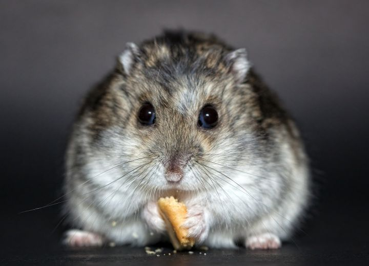
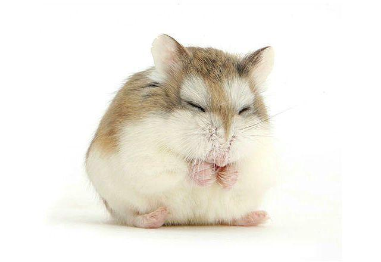
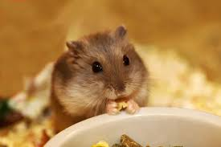
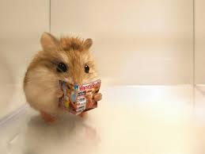
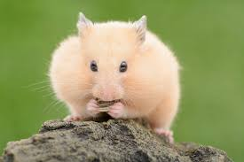

Джунгарики
Помимо любителей мелких и крупных грызунов, джунгарских хомячков заводят люди, которые по каким-то причинам не могут или не хотят содержать более крупного питомца, а иметь рядом живое существо хочется.
А еще их заводят как первых питомцев для детей.
Джунгарики очень милые, активные и любознательные.
Не требуют сложных условий содержания, какого-то особенного ухода, неприхотливы в еде.
Джунгарики бывают разные
- Сапфир – серо-голубой окрас 
- Жемчуг – самый редкий. Это белый хомячок. 
- стандартная – коричнево-серый с белым брюшком; 
- мандарин – кремово-рыжий. 
Что нельзя джунгарикам
- хвойные ветви; различные колбасы и сосиски;
- крупы (пшеница, овес, ячмень, гречка);
- семена (дыни, тыквы, подсолнечника);
- сухофрукты (груша, изюм, курага, сушеные яблоки);
- ростки (бамбука, люцерны, пшеницы);
Паркур джунгарика
Что нужно знать про общение с сородичами и людьми?
- В природе взрослые хомяки живут в одиночку. Если вы все же решите завести пару, лучше возьмите тех, что с рождения были рядом. При попытке подселить чужого хомяка к уже живущему у вас, велика вероятность возникновения конфликта. Однако можно поставить в клетку съемную перегородку и дать зверькам привыкнуть друг к другу.
- Если у вас живут самец и самка, то во время беременности и выращивания детенышей самца обязательно либо отсаживайте в другую клетку, либо отделяйте перегородкой. Иначе кто-нибудь из родителей съест потомство.
- Когда джунгарик попадает в ваш дом, ему нужно 7-10 дней, чтобы привыкнуть к новой обстановке – незнакомым запахам, новой клетке, звукам вокруг.
- Клетку установите так, чтобы, с одной стороны, зверек видел и привыкал к голосам и внешнему виду людей, с другой стороны – не должно быть очень шумно. Ни в коем случае не тревожьте хомячка днем во время сна.
20 фактов про хомячков
- Слово «хомяк» происходит из древнего авестийского языка – оно означает «враг, повергающий на землю» (так как грызуны пригибают к земле стебли растений, чтобы добраться до семян).
- Хомяки бывают очень разными – длина их тела варьируется от 5 до 34 сантиметров. Однако любого представителя этого вида легко узнать по хорошо развитым защечным мешкам. Этим они напоминают бурундуков (см. интересные факты о бурундуках).
- Эти грызуны встречаются в горах на высоте до трёх с половиной километров.
- Хомяки хорошо плавают, набирая в защечные мешки воздух и используя их как поплавки. 
- Хомяки предпочитают в одиночестве жить в своих сложных норах с множеством ходов и переходов.
- Обыкновенный хомяк может запасать до 90 килограммов корма. Так же поступают и белки — они запасают больше, чем в итоге съедают за зиму (см. интересные факты о белках).
- Сирийский хомячок и хомячок Ньютона занесены в Красную книгу, так как они оказались на грани вымирания.
- Жителям Вьетнама законодательно запрещено держать дома хомяков, потому что они являются переносчиками многих опасных заболеваний. Штраф за пренебрежение этим запретом составляет до 30 миллионов вьетнамских донгов (около 57 тысяч рублей). 
- Клетки яичника китайского хомячка используют для изготовления лекарств от тяжелых заболеваний, в том числе от хронического лимфолейкоза и рассеянного склероза.
- Некоторые породы карликовых хомяков способны отсрочить появление на свет потомства, если они еще выкармливают предыдущий выводок.
- У хомяков плохое зрение, они не различают цвета, зато обладают прекрасным обонянием и слухом.
- Хомяки помечают свой путь при помощи специальных пахучих желез.
- Почти все домашние золотые хомяки произошли от одной самки, которая в 1930 году родила 12 детенышей.
- Хомяки довольно сообразительны – они запоминают свою кличку, помнят родственников и могут научиться нескольким трюкам.
- Хомяк может за ночь преодолеть до 10 километров в своем колесе. Точнее, мог бы, если бы колесо катилось по ровной поверхности. 
- Хомяки – один из немногих видов животных, которые появляются на свет с зубами. Зубы продолжают расти всю жизнь этих грызунов, поэтому они должны постоянно их стачивать, как и морские свинки (см. интересные факты о морских свинках).
- Хомяки способны переносить в своих защечных мешках запас корма, вес которого составляет 20% от массы их тела.
- Лесные хомяки, обитающие в Северной Америке, очень любят таскать в свои норы блестящие предметы, найденные в округе. На месте вещи, которую они позаимствовали, хомяки обычно оставляют палочку или камень, как бы совершая обмен. На самом же деле зверьки просто бросают то, что несли ранее, если видят более притягательный для них предмет.
- Хомяки едят не только зерна и ягоды, но и мелких насекомых, чтобы восполнить нехватку белка в растительной пище (см. интересные факты о насекомых).